技术报告
Enzhe Lu¹ Zhejun Jiang¹ Jingyuan Liu¹ Yulun Du¹ Tao Jiang¹ Chao Hong¹
Shaowei Liu¹ Weiran He¹ Enming Yuan¹ Yuzhi Wang¹ Zhiqi Huang¹ Huan Yuan¹
Suting Xu¹ Xinran Xu¹ Guokun Lai¹ Yanru Chen¹ Huabin Zheng¹ Junjie Yan¹
Jianlin Su¹ Yuxin Wu¹ Neo Y. Zhang¹ Zhilin Yang¹
Xinyu Zhou¹‡ Mingxing Zhang²* Jiezhong Qiu³‡
¹ Moonshot AI ² 清华大学 ³ 之江实验室／浙江大学
扩展有效上下文长度，对于推动大语言模型（LLM）迈向通用人工智能（AGI）至关重要。然而，传统 attention 机制固有的计算复杂度二次增长带来了难以承受的开销。现有方法要么施加具有强偏置的结构，例如针对特定任务的 sink 或窗口 attention；要么将 attention 机制大幅修改为线性近似，而此类方法在复杂推理任务中的性能仍未得到充分探索。
本工作提出一种遵循“更少结构”原则的解决方案，让模型自主决定应该关注哪里，而非引入预定义偏置。我们提出块混合 attention（Mixture of Block Attention，MoBA），一种将混合专家（MoE）原理应用于 attention 机制的创新方法。这种新架构在长上下文任务中表现出色，同时具有一个关键优势：能够在全量与稀疏 attention 之间无缝切换，提升效率而无须承担性能受损的风险。MoBA 已部署用于支持 Kimi 的长上下文请求，展示了 LLM 高效 attention 计算的重要进展。代码见 https://github.com/MoonshotAI/MoBA。
对通用人工智能（AGI）的追求推动大语言模型（LLM）发展到前所未有的规模，有望处理模仿人类认知的复杂任务。实现 AGI 的一项关键能力是处理、理解和生成长序列，这对从历史数据分析到复杂推理及决策过程等广泛应用至关重要。这种日益增长的扩展上下文处理需求，不仅体现在长输入提示理解的普及上——Kimi（MoonshotAI，2023）、Claude（Anthropic，2023）和 Gemini（Reid 等，2024）展示了这一点——也体现在 Kimi k1.5（Team 等，2025）、DeepSeek-R1（D. Guo 等，2025）和 OpenAI o1/o3（Guan 等，2024）对长 chain-of-thought（CoT）输出能力的近期探索中。
然而，原始 attention 机制（Waswani 等，2017）的计算复杂度随序列长度呈二次增长，因此扩展 LLM 的序列长度并非易事。这一挑战推动了一波研究，目标是在不牺牲性能的前提下提高效率。一个主要方向利用 attention 分数固有的稀疏性。这种稀疏性既有数学来源——来自 softmax 操作，其多种稀疏 attention 模式已被研究（H. Jiang 等，2024）——也有生物学依据（Watson 等，2025），即在与记忆存储相关的脑区观察到稀疏连接。
* zhang_mingxing@mail.tsinghua.edu.cn
‡ 共同通讯作者：Xinyu Zhou（zhouxinyu@moonshot.cn）、Jiezhong Qiu（jiezhongqiu@outlook.com）。
arXiv:2502.13189v1 [cs.LG]，2025 年 2 月 18 日。
现有方法通常利用预定义结构约束，例如基于 sink 的 attention（G. Xiao 等，2023）或滑动窗口 attention（Beltagy 等，2020），来利用这种稀疏性。这些方法虽可能有效，但往往高度针对特定任务，可能妨碍模型整体的泛化能力。另一类方法是动态稀疏 attention 机制，例如 Quest（Tang 等，2024）、Minference（H. Jiang 等，2024）与 RetrievalAttention（Di Liu 等，2024），在推理时选择 token 子集。虽然这些方法能减少长序列计算，却不能显著减轻长上下文模型密集的训练成本，使 LLM 高效扩展至百万 token 级上下文仍然困难。近期出现的另一个有前景的方向是线性 attention 模型，例如 Mamba（Dao 和 Gu，2024）、RWKV（Peng、Alcaide 等，2023；Peng、Goldstein 等，2024）与 RetNet（Sun 等，2023）。这些方法用线性近似替代标准的基于 softmax 的 attention，从而降低长序列处理的计算开销。然而，由于线性与传统 attention 差异显著，改造现有 transformer 模型通常需要较高转换成本（Mercat 等，2024；J. Wang 等，2024；Bick 等，2025；M. Zhang 等，2024），或者需要从零训练全新模型（A. Li 等，2025）。更重要的是，其在复杂推理任务中有效性的证据仍然有限。
因此，一个关键研究问题出现了：如何设计稳健且适应性强的 attention 架构，在保留原始 transformer 框架的同时遵循“更少结构”原则，让模型不依赖预定义偏置，自主决定关注哪里？理想情况下，这种架构应能在全量与稀疏 attention 模式间无缝切换，最大程度兼容现有预训练模型，同时支持高效推理与加速训练，而不损害性能。
为此，我们提出块混合 attention（MoBA），一种以混合专家（MoE）（Shazeer 等，2017）创新原理为基础，并将其应用于 transformer 模型 attention 机制的新架构。MoE 主要用于 transformer 的前馈网络（FFN）层（Lepikhin 等，2020；Fedus 等，2022；Zoph 等，2022），而 MoBA 开创了它在长上下文 attention 中的应用，让每个 query token 动态选择历史上相关的 key 和 value 块。这种方法不仅提升 LLM 的效率，还使它们能够在资源消耗不成比例增长的情况下处理更长、更复杂的提示。MoBA 将上下文划分为块，并使用门控机制，有选择地将 query token 路由至最相关的块，从而解决传统 attention 机制的计算低效问题。这种块稀疏 attention 显著降低计算成本，为更高效地处理长序列铺平道路。模型动态选择信息量最大的 key 块的能力带来了性能和效率提升，尤其有利于涉及大量上下文信息的任务。
本文详细介绍 MoBA 架构：首先是分块与路由策略，其次是与传统 attention 机制相比的计算效率。我们还展示实验结果，证实 MoBA 在需要处理长序列的任务中具有优秀性能。我们的工作为高效 attention 计算贡献了一种新方法，推进了 LLM 处理复杂长输入的能力边界。
本工作提出一种称为块混合 attention（MoBA）的新架构，通过动态选择历史片段（块）进行 attention 计算，扩展 transformer 模型能力。MoBA 受到混合专家（MoE）与稀疏 attention 技术的启发。前者主要用于 transformer 架构中的 FFN 层，后者广泛用于扩展 transformer 以处理长上下文。我们创新地将 MoE 原理应用于 attention 机制本身，让长序列处理更加高效有效。
首先回顾 transformer 中的标准 attention。为简单起见，考虑单个 query token \(q\in\mathbb{R}^{1\times d}\) 关注 \(N\) 个 key 和 value token 的情况，分别记为 \(K,V\in\mathbb{R}^{N\times d}\)。标准 attention 计算如下：
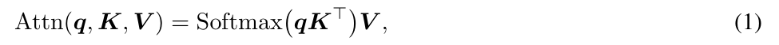
其中，\(d\) 表示单个 attention head 的维度。为清晰起见，我们聚焦单 head 场景。扩展至多 head attention 时，需要拼接多个这种单 head attention 操作的输出。
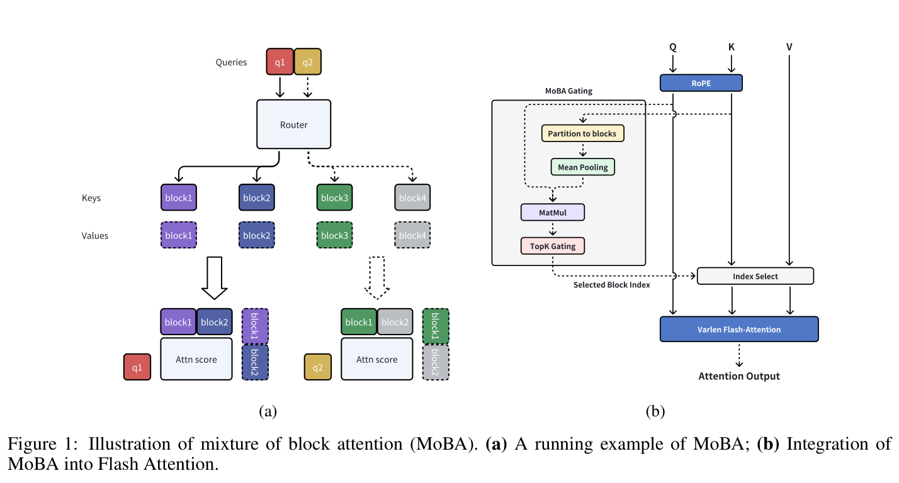
图 1：块混合 attention（MoBA）示意。（a）MoBA 的运行示例；（b）将 MoBA 集成到 Flash Attention。
不同于每个 query token 关注整个上下文的标准 attention，MoBA 使每个 query token 仅关注 key 和 value 的一个子集：
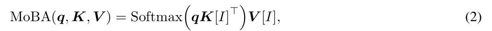
其中，\(\mathcal{I}\subseteq[N]\) 是选定 key 和 value 的集合。
MoBA 的关键创新是分块与选择策略。我们将长度为 \(N\) 的完整上下文划分为 \(n\) 个块，每块表示一段连续 token 的子集。不失一般性，假设上下文长度 \(N\) 能被块数 \(n\) 整除。进一步记块大小为 \(B=N/n\)，并令
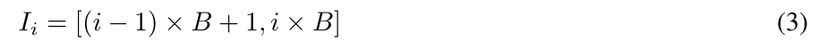
表示第 \(i\) 个块的范围。通过应用 MoE 的 Top-k 门控机制，每个 query 可以有选择地关注不同块中的 token 子集，而非整个上下文：
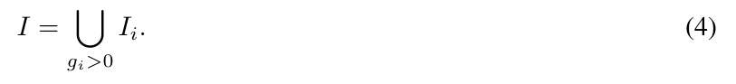
模型采用门控机制，即公式 4 中的 \(g_i\)，为每个 query token 选择最相关的块。MoBA 门控首先计算亲和分数 \(s_i\)，衡量 query \(q\) 与第 \(i\) 个块的相关性，再在所有块之间应用 Top-k 门控。更正式地，第 \(i\) 个块的门控值 \(g_i\) 按如下方式计算：
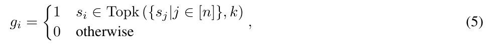
其中，\(\operatorname{Topk}(\cdot,k)\) 表示由各块亲和分数中最高的 \(k\) 个分数组成的集合。本工作通过 \(q\) 与 \(K[\mathcal{I}_i]\) 沿序列维度的平均池化结果之间的内积计算分数 \(s_i\)：
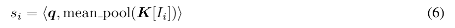
运行示例。图 1a 给出一个 MoBA 运行示例，其中有两个 query token 和四个 KV 块。router（门控网络）为每个 query 动态选择排名前两位的块进行 attention。如图 1a 所示，第一个 query 被分配到第一和第二个块，而第二个 query 被分配到第三和第四个块。
自回归语言模型通过基于此前 token 的下一 token 预测生成文本，因此维持因果性十分重要。这种顺序生成过程确保一个 token 不能影响出现在它之前的 token，从而保留因果关系。MoBA 通过两个具体设计保持因果性：
因果性：不关注未来块。MoBA 确保 query token 不会路由到任何未来块。将 attention 范围限制在当前和过去块，使 MoBA 遵循语言建模的自回归性质。更正式地，记 \(\operatorname{pos}(q)\) 为 query \(q\) 的位置索引；对于满足 \(\operatorname{pos}(q)<iB\) 的任何块 \(i\)，设 \(s_i=-\infty\) 且 \(g_i=0\)。
当前块 attention 与因果 mask。我们将包含 query token 本身的块定义为“当前块”。路由到当前块也可能违反因果性，因为整个块上的平均池化可能无意纳入未来 token 的信息。为解决这一问题，我们强制每个 token 路由至其对应的当前块，并在当前块 attention 中应用因果 mask。这一策略既避免后续 token 的信息泄漏，也鼓励关注局部上下文。更正式地，对于 query token 位置 \(\operatorname{pos}(q)\) 位于区间 \(\mathcal{I}_i\) 内的块 \(i\)，设 \(g_i=1\)。从 MoE 的角度看，MoBA 中的当前块 attention 类似现代 MoE 架构（Dai 等，2024；A. Yang 等，2024）中的共享专家：选择专家时加入静态路由规则。
接下来讨论 MoBA 的其他关键设计选择，例如分块策略及 MoBA 与全量 attention 的混合。
细粒度分块。MoE 文献已充分记述细粒度专家划分对提高模型性能的积极影响（Dai 等，2024；A. Yang 等，2024）。本工作探索将类似的细粒度划分技术应用于 MoBA 的潜在优势。MoBA 受 MoE 启发，但沿上下文长度维度划分，而非 FFN 中间隐藏维度。因此，我们的研究旨在确定，将上下文划分为更细粒度的块时，MoBA 是否也能受益。更多实验结果见第 3.1 节。
MoBA 与全量 attention 混合。MoBA 被设计为全量 attention 的替代方案，保持相同参数数量，不增不减。这一特点启发我们在全量 attention 与 MoBA 之间进行平滑切换。具体而言，在初始化阶段，每个 attention 层可以选择全量 attention 或 MoBA，如有必要，可在训练中动态修改这一选择。此前工作研究过从全量 attention 切换至滑动窗口 attention 的类似思路（X. Zhang 等，2024）。更多实验结果见第 3.2 节。
与滑动窗口 attention 和 attention sink 比较。滑动窗口 attention（SWA）和 attention sink 是两种流行的稀疏 attention 架构。我们说明，两者都可视为 MoBA 的特殊情况。对于滑动窗口 attention（Beltagy 等，2020），每个 query token 仅关注其相邻 token。这可以解释为一种 MoBA 变体，其门控网络始终选择最近的块。类似地，attention sink（G. Xiao 等，2023）让每个 query token 同时关注初始 token 和最近 token，可视为门控网络始终选择初始块与最近块的 MoBA 变体。上述讨论表明，MoBA 比滑动窗口 attention 和 attention sink 具有更强的表达能力。此外，通过加入特定门控网络，MoBA 可以灵活近似多种静态稀疏 attention 架构。
总体而言，MoBA 的 attention 机制让模型能够自适应、动态地聚焦上下文中信息最丰富的块。这特别有利于涉及长文档或长序列的任务，因为关注整个上下文可能没有必要且计算昂贵。MoBA 有选择地关注相关块的能力，使信息处理更加细致高效。
我们提供 MoBA 的高性能实现，结合 FlashAttention（Dao、D. Fu 等，2022）与 MoE（Rajbhandari 等，2022）的优化技术。图 2 展示 MoBA 的高效率，效率与可扩展性的详细实验留到第 3.4 节。我们的实现包含五个主要步骤：
（步骤列表续下页。）
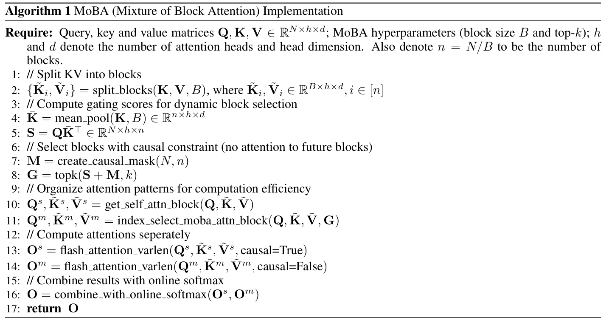
输入要求：query、key 和 value 矩阵 \(Q,K,V\in\mathbb{R}^{N\times h\times d}\)；MoBA 超参数（块大小 \(B\) 与 Top-k）；\(h\) 和 \(d\) 分别为 attention head 数及 head 维度。另记 \(n=N/B\) 为块数。
算法注释依次为：将 KV 划分成块；计算用于动态块选择的门控分数；在因果约束下选择块（不关注未来块）；为提高计算效率组织 attention 模式；分别计算 attention；使用在线 softmax 合并结果。第 2 行的块矩阵满足 \(\tilde K_i,\tilde V_i\in\mathbb{R}^{B\times h\times d},i\in[n]\)，第 4 行的平均池化 key 满足 \(\bar K\in\mathbb{R}^{n\times h\times d}\)，第 5 行的门控分数满足 \(S=Q\bar K^T\in\mathbb{R}^{N\times h\times n}\)。返回结果为 \(O\)。
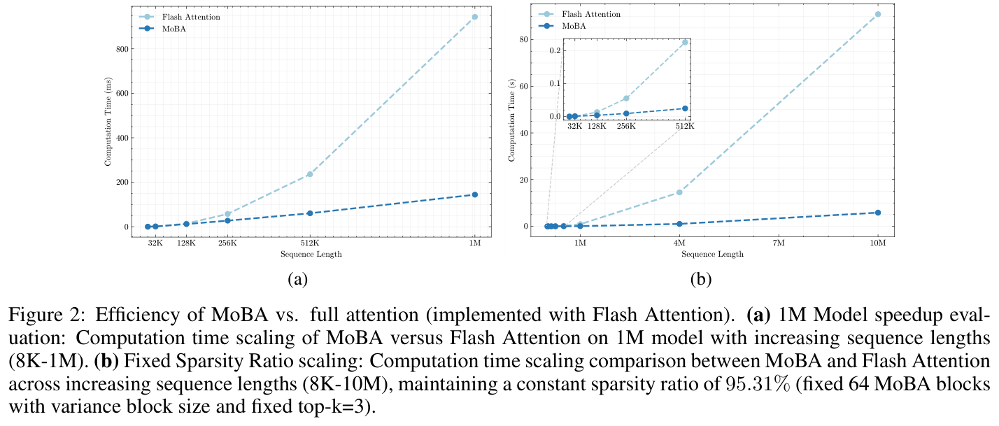
图 2：MoBA 与全量 attention（使用 Flash Attention 实现）的效率比较。（a）1M 模型加速评估：序列长度增加（8K–1M）时，1M 模型中 MoBA 与 Flash Attention 计算时间的变化。（b）固定稀疏比例的扩展：序列长度增加（8K–10M）时，MoBA 与 Flash Attention 的计算时间对比，保持稀疏比例为 95.31%（固定 64 个 MoBA 块，改变块大小，固定 top-k=3）。
算法流程在算法 1 中形式化，并在图 1b 中可视化，说明如何基于 MoE 与 FlashAttention 实现 MoBA。首先将 KV 矩阵划分成块（第 1–2 行）。随后按公式 6 计算门控分数，衡量 query token 与 KV 块的相关性（第 3–7 行）。对门控分数（连同因果 mask）应用 Top-k 算子，产生稀疏的 query 到 KV 块映射矩阵 \(G\)，表示 query 对 KV 块的分配（第 8 行）。随后，根据 query 到 KV 块的映射排列 query token，计算逐块 attention 输出（第 9–12 行）。需要注意，历史块 attention（第 11 和 14 行）与当前块 attention（第 10 和 13 行）分别计算，因为当前块 attention 需要维持额外的因果性。最后，将 attention 输出排列回原始顺序，使用在线 softmax 合并（第 16 行）（Milakov 等，2018；H. Liu 等，2023）。
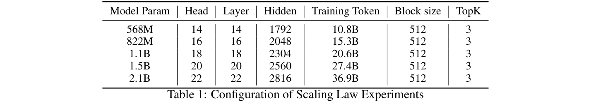
表 1：scaling law 实验配置。
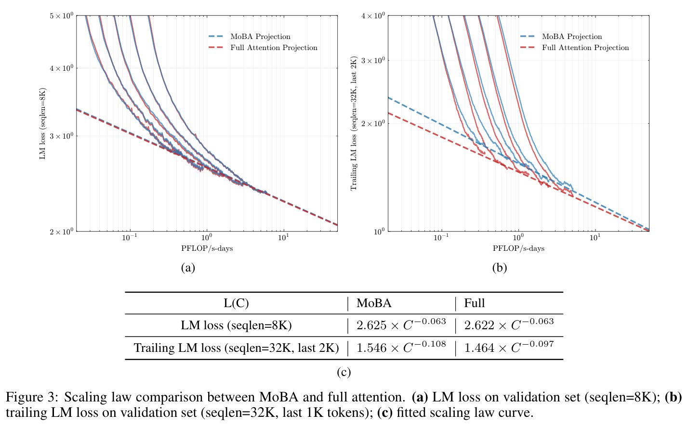
图 3：MoBA 与全量 attention 的 scaling law 对比。（a）验证集 LM loss（序列长度=8K）；（b）验证集末尾 LM loss（序列长度=32K，最后 1K 个 token）；（c）拟合的 scaling law 曲线。
本节开展 scaling law 实验与消融研究，验证 MoBA 的若干关键设计选择。
LM loss 的可扩展性。为评估 MoBA 的有效性，我们比较使用全量 attention 或 MoBA 训练的语言模型的验证 loss，开展 scaling law 实验。遵循 Chinchilla scaling law（Hoffmann 等，2022），我们用足够的训练 token 训练五个不同规模的语言模型，确保每个模型达到训练最优状态。scaling law 实验详细配置见表 1。MoBA 与全量 attention 模型均使用 8K 序列长度训练。对于 MoBA 模型，设块大小为 512，选择排名前 3 个块进行 attention，产生稀疏性最高为 \(1-512\times3/8192=81.25\%\) 的稀疏 attention 模式³。尤其是，MoBA 作为全量 attention 的替代方案，不引入新参数也不删除现有参数。这一设计简化比较过程，因为所有实验的唯一差异是 attention 模块，其他所有超参数，包括学习率和 batch size，均保持不变。如图 3a 所示，MoBA 与全量 attention 的验证 loss 曲线显示出非常相似的缩放趋势。具体而言，两种 attention 机制间的验证 loss 差异始终保持在 \(1e-3\) 范围内。这说明，尽管 MoBA 的稀疏 attention 模式稀疏性最高达 75%，它仍能获得与全量 attention 相当的缩放性能。
³ 由于设置 top-k=3，每个 query token 最多能关注 2 个历史块和当前块。
长上下文可扩展性。然而，LM loss 可能受数据长度分布影响（An 等，2024），该分布通常以短序列为主。为充分评估 MoBA 的长上下文能力，我们评估末尾 token 的 LM loss（简称末尾 LM loss），即计算序列最后若干 token 的 LM loss。我们仅统计达到最大序列长度的序列，以避免非常短的序列可能引起的偏差。末尾 token 缩放的详细讨论见附录 A.1。
这些指标可以反映模型生成序列末尾部分的能力，对于长上下文理解任务尤其有参考价值。因此，我们修改实验设置，将最大序列长度从 8k 提高到 32k。这使 MoBA 的 attention 模式更加稀疏，稀疏性最高为 \(1-512\times3/32768=95.31\%\)。如图 3b 所示，尽管在全部五个实验中，MoBA 的最后一块 LM loss 略高于全量 attention，但 loss 差距逐渐缩小。这一实验说明 MoBA 的长上下文可扩展性。
细粒度分块消融研究。我们进一步对 MoBA 的块粒度进行消融。在具有 32K 上下文长度的 1.5B 参数模型上开展一系列实验。调整块大小与 Top-k 超参数，以保持一致的 attention 稀疏性。具体而言，将 32K 上下文分别划分成 8、16、32、64 和 128 个块，相应选择 2、4、8、16 和 32 个块，确保各配置的 attention 稀疏性均为 75%。如图 4 所示，MoBA 的性能显著受块粒度影响。具体而言，最粗粒度配置（从 8 块中选 2 块）与更细粒度配置间存在 1e-2 的性能差异。这些发现表明，细粒度划分可能是提升包括 MoBA 在内的 MoE 家族模型性能的一项通用技术。
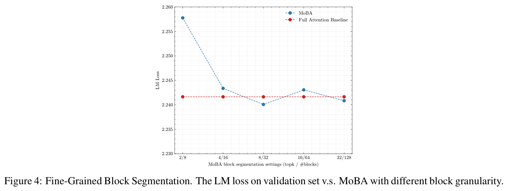
图 4：细粒度分块。验证集 LM loss 与不同块粒度 MoBA 配置的对比。
如第 2 节讨论，我们将 MoBA 设计为全量 attention 的灵活替代方案，使它能够以极小开销轻松切换至全量 attention 或由全量 attention 切回，并达到相当的长上下文性能。本节首先表明，全量 attention 与 MoBA 间无缝切换可作为高效长上下文预训练的一种方案。随后讨论逐层混合策略，主要针对监督微调（SFT）性能。
MoBA／全量混合训练。我们用 30B 个 token、32K token 上下文长度训练三个模型，每个模型均为 1.5B 参数。MoBA 超参数中，块大小设为 2048，top-k 设为 3。详细训练方案如下：
我们通过逐位置语言模型（LM）loss 评估长上下文性能，它是评估序列每个位置 LM loss 的细粒度指标。普通 LM loss 对所有位置的 LM loss 求平均，而逐位置 LM loss 分别统计各位置的 loss。此前研究（Xiong 等，2023；Reid 等，2024）提出过类似指标，并注意到……（续下页）
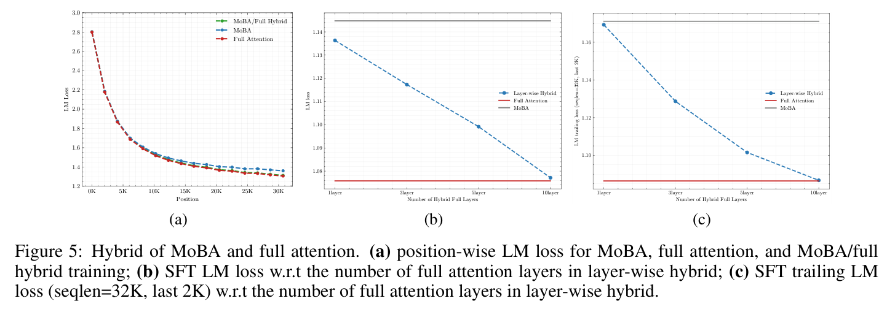
图 5：MoBA 与全量 attention 混合。（a）MoBA、全量 attention 及 MoBA／全量混合训练的逐位置 LM loss；（b）逐层混合中 SFT LM loss 与全量 attention 层数的关系；（c）逐层混合中 SFT 末尾 LM loss（序列长度=32K，最后 2K）与全量 attention 层数的关系。
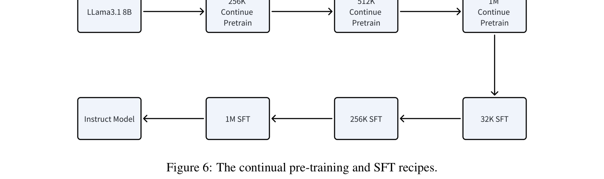
图 6：持续预训练与 SFT 方案。
（接上页）……逐位置 LM loss 相对于上下文长度遵循幂律趋势。如图 5a 所示，仅使用 MoBA 的方案在末尾 token 上产生更高的逐位置 loss。我们的 MoBA／全量混合方案达到几乎与全量 attention 相同的 loss。这一结果突出了 MoBA／全量混合训练方案在平衡训练效率与模型性能方面的有效性。更有趣的是，在 MoBA 与全量 attention 之间切换时，我们未观察到显著 loss spike，再次证明 MoBA 的灵活性与稳健性。
逐层混合。MoBA 的灵活性鼓励我们探索更复杂的策略——逐层混合 MoBA 与全量 attention。我们特别关注该策略在监督微调（SFT）中的应用。研究这一策略的动机来自观察：MoBA 有时在 SFT 中性能次优，如图 5b 所示。我们推测，这可能归因于 SFT 使用的 loss mask：SFT 通常将提示 token 排除在 loss 计算之外，这可能对 MoBA 等稀疏 attention 方法形成稀疏 gradient 挑战，因为它可能阻碍最初由未被 mask 的 token 计算得到的 gradient 在整个上下文中反向传播。为解决这一问题，我们提出混合方法：将最后若干 transformer 层从 MoBA 切换至全量 attention，其余层继续采用 MoBA。如图 5b 和 5c 所示，这一策略可以显著降低 SFT loss。
我们在多种实际下游任务中全面评估 MoBA，将其性能与全量 attention 模型比较。为便于验证，实验从 Llama 3.1 8B Base Model 开始，将其作为长上下文预训练起点。这个模型称为 Llama-8B-1M-MoBA，最初以上下文长度 128K 个 token 训练，在持续预训练期间逐步将上下文增至 256K、512K 和 1M 个 token。为使过渡更容易，我们在 256K 持续预训练阶段开始时使用位置插值方法（S. Chen 等，2023）。这一技术使我们可以扩展……（续下页）
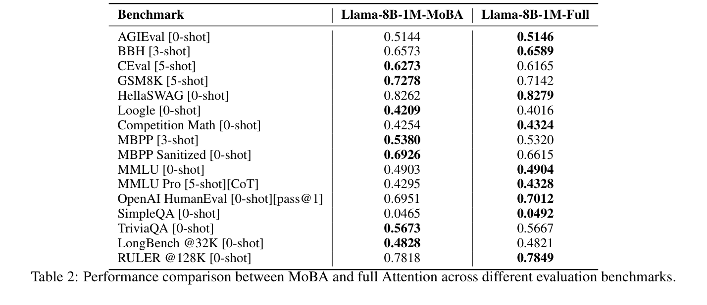
表 2：MoBA 与全量 attention 在不同评估基准上的性能对比。
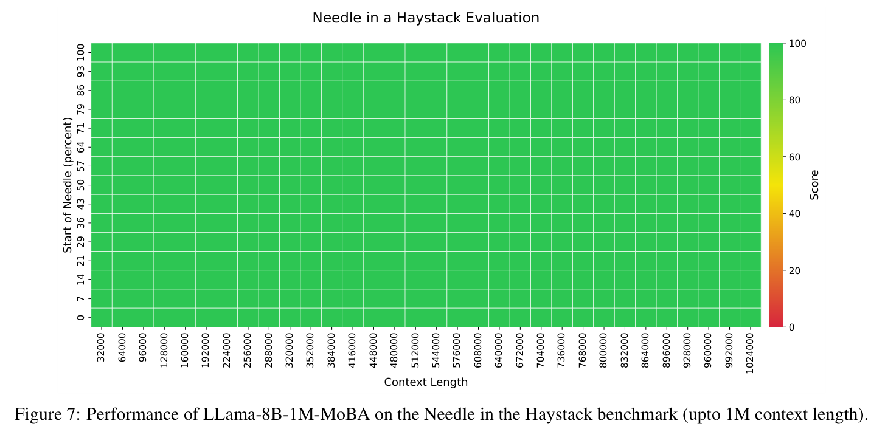
图 7：LLama-8B-1M-MoBA 在 Needle-in-a-Haystack 基准上的性能（上下文长度最高 1M）。
（接上页）……有效上下文长度从 128K 个 token 扩展至 1M 个 token。完成 1M 持续预训练后，启用 MoBA 训练 100B 个 token。我们设置块大小为 4096，top-K 参数为 12，attention 稀疏性最高为 \(1-4096\times12/(1\mathrm{M})=95.31\%\)。为保留部分全量 attention 能力，我们采用逐层混合策略：最后三层仍为全量 attention，其余 29 个全量 attention 层切换至 MoBA。监督微调采用类似策略，逐步将上下文长度从 32K 增至 1M。基线全量 attention 模型（称为 Llama-8B-1M-Full）也遵循类似训练策略，如图 6 所示，唯一差异是始终使用全量 attention。这让我们可以在相同训练条件下直接比较 MoBA 与全量 attention 模型的性能。
评估在若干广泛使用的长上下文基准上进行。尤其是，在所有评估任务中，MoBA 仅用于 prefill，而在生成阶段切换至全量 attention，以获得更好的性能。如表 2 所示，Llama-8B-1M-MoBA 的性能与 Llama-8B-1M-Full 高度相当。特别值得关注的是，在最长的基准 RULER 上，MoBA 的稀疏性最高为 \(1-4096\times12/(128\mathrm{K})=62.5\%\)，Llama-8B-1M-MoBA 几乎匹配 Llama-8B-1M-Full 的性能，得分分别为 0.7818 与 0.7849。对于最高 1M 个 token 的上下文长度，我们用传统 Needle-in-a-Haystack 基准评估模型。如图 7 所示，即使上下文扩展至 100 万个 token，Llama-8B-1M-MoBA 仍表现令人满意。
上述实验结果表明，MoBA 不仅在语言模型 loss 上取得相当性能，在实际任务中也一样。为进一步研究其效率，我们比较第 3.3 节训练的两个模型——Llama-8B-1M-MoBA 与 Llama-8B-1M-Full——中 attention 层的前向传播时间。我们仅关注 attention 层，因为所有其他层（例如 FFN）在两模型中的 FLOPs 相同。如图 2a 所示，MoBA 在全部上下文长度下均比全量 attention 高效，展现出次二次计算复杂度。尤其是在 prefill 1M 个 token 时，加速比最高达到 6.5 倍。
我们还通过逐步将上下文长度增加至 1000 万个 token，探索 MoBA 的长度可扩展性。为保持固定的 attention 稀疏性，我们固定 Top-k 值与 MoBA 块数，按比例增加块大小。为达到 10M 上下文长度，我们将张量并行（Shoeybi 等，2019）扩展至 query head 层级。具体而言，我们将 key 与 value 张量广播到分布式 query head，在维持计算效率的同时有效解决 GPU 内存限制。如图 2b 所示，扩展至更长序列时，MoBA 相比标准 Flash Attention 效率更高。具体而言，在 10M 个 token 时，MoBA 的 attention 计算时间获得 16 倍加速。上图中聚焦较短序列（32K 至 512K）的嵌入图表明，尽管两种方法在较小规模下表现相当，但序列越长，MoBA 的计算优势越明显，突出其处理极长序列的特长。
总体而言，MoBA 的高效率归因于两项关键创新：（1）块稀疏 attention 机制；（2）第 2.3 节所述，结合 MoE 与 FlashAttention 的优化实现。这些技术有效解决全量 attention 的二次复杂度限制，将计算复杂度降至更经济的次二次规模。
高效 attention（Tay、Dehghani 等，2020）机制的发展，一直是自然语言处理领域的关键研究方向，尤其伴随 LLM 的兴起。随着处理更长序列和降低计算成本的需求增加，高效 attention 技术成为一种有前景的解决方案，能够在维持模型性能的同时降低 self-attention 机制的二次复杂度。
静态稀疏模式：Sparse Transformer（Child 等，2019）、Star-Transformer（Q. Guo 等，2019）、BlockBERT（Qiu 等，2019）、Longformer（Beltagy 等，2020）、GMAT（Gupta 等，2020）、ETC（Ainslie、Ontanon 等，2020）、BigBird（Zaheer 等，2020）、LongT5（M. Guo 等，2021）和 LongNet（J. Ding 等，2023）等重要工作，致力于设计 LLM 中的静态 attention 模式。其静态模式可包括跨步与固定 attention、窗口 attention、全局 token attention、随机 attention、扩张 attention、块稀疏 attention，或它们的任意组合。在多模态模型领域，也发展了静态稀疏 attention 机制，例如用于二维图像的轴向 attention（Ho 等，2019）和用于三维视频的时空 attention（Z. Zheng 等，2024）。
动态稀疏模式：不同于静态模式，动态稀疏 attention 技术自适应决定应该关注哪些 token。Reformer（Kitaev 等，2020）与 Routing Transformer（Roy 等，2021）分别采用局部敏感哈希（LSH）和 K-means 聚类 token，关注簇而非完整上下文。Memorizing Transformers（Yuhuai Wu 等，2022）与 Unlimiformer（Bertsch 等，2024）动态关注 k 近邻（kNN）算法选出的 token。CoLT5（Ainslie、Lei 等，2023）设计路由模块，选择最重要的 query 与 key。Sparse Sinkhorn Attention（Tay、Bahri 等，2020）学习对输入序列的块进行置换，使动态块稀疏 attention 计算成为可能。
无须训练的稀疏 attention：除上述研究训练稀疏 attention 模型的方法外，还有策略通过纳入稀疏 attention 机制，提高模型推理两个主要阶段——prefill 或 decoding，或两者——的效率。在 prefill 优化阶段，可用完整提示分析 attention 分布，从而探索更复杂的稀疏 attention 模式。例如，MoA（T. Fu 等，2024）、Minference（H. Jiang 等，2024）和 SeerAttention（Y. Gao 等，2024）研究了 A 形、竖线与斜线、动态块稀疏等 attention 配置。在 decoding 优化中，大量工作致力于压缩与剪枝 KV cache，以平衡文本生成的质量和速度。代表性工作包括 H2O（Z. Zhang 等，2024）、StreamingLLM（G. Xiao 等，2023）、TOVA（Oren 等，2024）、FastGen（Ge 等，2023）和 Quest（Tang 等，2024）。尤其是，Quest 可视为具有更小块大小及专用块表示函数的 MoBA，该函数结合最小与最大池化。另一项与 MoBA 密切相关的工作是……（续下页）
（接上页）……Longheads（Y. Lu 等，2024），它可视为具有 Top-1 门控网络的 MoBA，即每个 query 选择最相关的 KV 块进行 attention。
超越传统 attention 架构：另一条研究路线探索偏离传统 attention 机制的新模型架构。由于架构改变，这些方法需要从零训练模型，无法复用基于 transformer 的预训练模型。该领域研究探索了受卷积神经网络（CNN）、循环神经网络（RNN）、状态空间模型（SSM）或线性 attention（Katharopoulos 等，2020）启发的架构。例子包括 Hyena（Poli 等，2023）、Performer（Choromanski 等，2020）、Linformer（S. Wang 等，2020）、RWKV（Peng、Alcaide 等，2023）、Mamba（Gu 等，2023）、RetNet（Sun 等，2023）等。
综上，高效 attention 技术呈现多样化，涵盖从静态到动态的稀疏模式、从训练到推理的优化目标，以及从传统 attention 机制到创新替代方案的架构。每种方法都有独特优势与权衡，技术选择往往取决于应用的具体要求，例如最大序列长度、计算资源，以及期望的效率与性能平衡。随着该领域研究持续发展，预计这些方法将在使 LLM 应对越来越复杂的任务、同时维持效率和可扩展性方面发挥关键作用。
本文提出块混合 attention（MoBA），一种受 MoE 原理启发的新 attention 架构，旨在增强 LLM 在长上下文任务中的效率与可扩展性。MoBA 将上下文划分为块，并采用动态门控机制，有选择地将 query token 路由至最相关 KV 块，从而解决传统 attention 机制的计算挑战。这种方法不仅降低计算复杂度，还维持模型性能。此外，它允许在全量与稀疏 attention 之间无缝切换。通过广泛实验，我们表明 MoBA 能在显著提升计算效率的同时，达到与全量 attention 相当的性能。结果显示，MoBA 能有效扩展至长上下文，保持较低 LM loss，并在各种基准上获得较高性能。此外，MoBA 的灵活性使其能够在没有大量训练成本的情况下集成到现有模型，成为增强 LLM 长上下文能力的实用持续预训练方案。综上，MoBA 代表了高效 attention 的重要进展，为性能与效率提供平衡方案。未来工作可以进一步优化 MoBA 的块选择策略，研究它在其他模态中的应用，并探索它改善复杂推理任务泛化能力的潜力。
Ainslie, Joshua, Tao Lei, 等 “CoLT5：具有条件计算的更快长距离 transformer”. 载于 arXiv 预印本 arXiv:2303.09752 (2023).
Ainslie, Joshua, Santiago Ontanon, 等 “ETC：在 transformer 中编码长且结构化的输入”. 载于 arXiv 预印本 arXiv:2004.08483 (2020).
An, Chenxin 等 “为什么 LLM 的有效上下文长度不足？” 载于 arXiv 预印本 arXiv:2410.18745 (2024).
Anthropic. 推出 100K 上下文窗口. https://www.anthropic.com/news/100k-context-windows. 2023.
Beltagy, Iz, Matthew E Peters, 和 Arman Cohan. “Longformer：长文档 transformer”. 载于 arXiv 预印本 arXiv:2004.05150 (2020).
Bertsch, Amanda 等 “Unlimiformer：输入长度无限的长距离 transformer”. 载于 Advances in Neural Information Processing Systems 36 (2024).
Bick, Aviv 等 “从 transformer 到 SSM：将二次复杂度知识蒸馏至次二次复杂度模型”. 载于 Advances in Neural Information Processing Systems 37 (2025), 页码： 31788–31812.
Chen, Shouyuan 等 “通过位置插值扩展大语言模型的上下文窗口”. 载于 arXiv 预印本 arXiv:2401.06066 (2023).
Child, Rewon 等 “使用稀疏 transformer 生成长序列”. 载于 arXiv 预印本 arXiv:1904.10509 (2019).
Choromanski, Krzysztof 等 “借助 Performer 重新思考 attention”. 载于 arXiv 预印本 arXiv:2009.14794 (2020).
Dai, Damai 等 “DeepSeekMoE：走向混合专家语言模型的极致专家专门化”. 载于 arXiv 预印本 arXiv:2401.06066 (2024).
Dao, Tri, Dan Fu, 等 “FlashAttention：具有 I/O 感知的快速且内存高效的精确 attention”. 载于 Advances in Neural Information Processing Systems 35 (2022), 页码： 16344–16359.
Dao, Tri 和 Albert Gu. “transformer 是 SSM：通过结构化状态空间对偶实现通用模型与高效算法”. 载于 arXiv 预印本 arXiv:2405.21060 (2024).
Ding, Jiayu 等 “LongNet：将 transformer 扩展至 10 亿个 token”. 载于 arXiv 预印本 arXiv:2307.02486 (2023).
Fedus, William, Barret Zoph, 和 Noam Shazeer. “Switch transformer：以简单高效的稀疏性扩展至万亿参数模型”. 载于 Journal of Machine Learning Research 23.120 (2022), 页码： 1–39.
Fu, Tianyu 等 “MoA：用于自动大语言模型压缩的混合稀疏 attention”. 载于 arXiv 预印本 arXiv:2406.14909 (2024).
Gao, Yizhao et al. “SeerAttention：学习 LLM 内在的稀疏 attention”. 载于 arXiv 预印本 arXiv:2410.13276 (2024).
Ge, Suyu 等 “模型告诉你丢弃什么：LLM 的自适应 KV cache 压缩”. 载于 arXiv 预印本 arXiv:2310.01801 (2023).
Gu, Albert 和 Tri Dao. “Mamba：使用选择性状态空间的线性时间序列建模”. 载于 arXiv 预印本 arXiv:2312.00752 (2023).
Guan, Melody Y 等 “深思式对齐：推理使语言模型更安全”. 载于 arXiv 预印本 arXiv:2412.16339 (2024).
Guo, Daya 等 “DeepSeek-R1：通过强化学习激励 LLM 的推理能力”. 载于 arXiv 预印本 arXiv:2501.12948 (2025).
Guo, Mandy et al. “LongT5：面向长序列的高效文本到文本 transformer”. 载于 arXiv preprint arXiv:2112.07916 (2021).
Guo, Qipeng 等 “Star-transformer”. 载于 arXiv 预印本 arXiv:1902.09113 (2019).
Gupta, Ankit 和 Jonathan Berant. “GMAT：transformer 的全局记忆增强”. 载于 arXiv 预印本 arXiv:2006.03274 (2020).
Ho, Jonathan 等 “多维 transformer 中的轴向 attention”. 载于 arXiv 预印本 arXiv:1912.12180 (2019).
Hoffmann, Jordan 等 “训练计算最优的大语言模型”. 载于 arXiv 预印本 arXiv:2203.15556 (2022).
Jiang, Huiqiang 等 “MInference 1.0：通过动态稀疏 attention 加速长上下文 LLM 的 prefill”. 载于 arXiv 预印本 arXiv:2407.02490 (2024).
Katharopoulos, Angelos 等 “transformer 是 RNN：采用线性 attention 的快速自回归 transformer”. 载于 International conference on machine learning. PMLR. 2020, 页码： 5156–5165.
Kitaev, Nikita, Łukasz Kaiser, 和 Anselm Levskaya. “Reformer：高效的 transformer”. 载于 arXiv 预印本 arXiv:2001.04451 (2020).
Lepikhin, Dmitry 等 “GShard：使用条件计算与自动分片扩展巨型模型”. 载于 arXiv 预印本 arXiv:2006.16668 (2020).
Li, Aonian et al. “MiniMax-01：使用 lightning attention 扩展基础模型”. 载于 arXiv preprint arXiv:2501.08313 (2025).
Liu, Di 等 “RetrievalAttention：通过向量检索加速长上下文 LLM 推理”. 载于 arXiv 预印本 arXiv:2409.10516 (2024).
Liu, Hao 和 Pieter Abbeel. “面向大上下文模型的分块并行 transformer”. 载于 arXiv 预印本 arXiv:2305.19370 (2023).
Lu, Yi et al. “LongHeads：多 head attention 隐藏着长上下文处理能力”. 载于 arXiv 预印本 arXiv:2402.10685 (2024).
Mercat, Jean 等 “将大语言模型线性化”. 载于 arXiv 预印本 arXiv:2405.06640 (2024).
Milakov, Maxim 和 Natalia Gimelshein. “softmax 的在线归一化因子计算”. 载于 arXiv preprint arXiv:1805.02867 (2018).
MoonshotAI. Kimi Chat. https://kimi.moonshot.cn/. 2023.
Oren, Matanel 等 “transformer 是多状态 RNN”. 载于 arXiv 预印本 arXiv:2401.06104 (2024).
Peng, Bo, Eric Alcaide, 等 “RWKV：为 transformer 时代重新发明 RNN”. 载于 arXiv 预印本 arXiv:2305.13048 (2023).
Peng, Bo, Daniel Goldstein, 等 “Eagle 与 Finch：具有矩阵值状态和动态递归的 RWKV”. 载于 arXiv 预印本 arXiv:2404.05892 (2024).
Poli, Michael 等 “Hyena 层级：迈向更大的卷积语言模型”. 载于 International Conference on Machine Learning. PMLR. 2023, 页码： 28043–28078.
Qiu, Jiezhong 等 “面向长文档理解的分块 self-attention”. 载于 arXiv 预印本 arXiv:1911.02972 (2019).
Rajbhandari, Samyam 等 “DeepSpeed-MoE：推进混合专家推理与训练，支撑下一代 AI 规模”. 载于 International conference on machine learning. PMLR. 2022, 页码： 18332–18346.
Reid, Machel 等 “Gemini 1.5：解锁跨数百万上下文 token 的多模态理解”. 载于 arXiv 预印本 arXiv:2403.05530 (2024).
Roy, Aurko 等 “使用 routing transformer 实现高效的基于内容的稀疏 attention”. 载于 Transactions of the Associ- ation for Computational Linguistics 9 (2021), 页码： 53–68.
Shazeer, Noam 等 “极其庞大的神经网络：稀疏门控混合专家层”. 载于 arXiv 预印本 arXiv:1701.06538 (2017).
Shoeybi, Mohammad 等 “Megatron-LM：使用模型并行训练数十亿参数语言模型”. 载于 arXiv 预印本 arXiv:1909.08053 (2019).
Sun, Yutao 等 “Retentive Network：面向大语言模型的 transformer 继任者”. 载于 arXiv 预印本 arXiv:2307.08621 (2023).
Tang, Jiaming 等 “Quest：面向高效长上下文 LLM 推理的 query 感知稀疏性”. 载于 arXiv 预印本 arXiv:2406.10774 (2024).
Tay, Yi, Dara Bahri, 等 “稀疏 Sinkhorn attention”. 载于 International Conference on Machine Learning. PMLR. 2020, 页码： 9438–9447.
Tay, Yi, Mostafa Dehghani, 等 “高效 transformer：综述。arXiv”. 载于 arXiv 预印本 arXiv:2009.06732 (2020).
Team, Kimi 等 “Kimi k1.5：扩展 LLM 的强化学习”. 载于 arXiv 预印本 arXiv:2501.12599 (2025).
Wang, Junxiong 等 “Llama 中的 Mamba：蒸馏并加速混合模型”. 载于 arXiv 预印本 arXiv:2408.15237 (2024).
Wang, Sinong 等 “Linformer：线性复杂度 self-attention”. 载于 arXiv 预印本 arXiv:2006.04768 (2020).
Waswani, A 等 “只需 attention”. 载于 NIPS. 2017.
Watson, Jake F 等 “人类海马 CA3 使用特定功能连接规则实现高效联想记忆”. 载于 Cell 188.2 (2025), 页码： 501–514.
Wu, Yuhuai 等 “具有记忆的 transformer”. 载于 arXiv 预印本 arXiv:2203.08913 (2022).
Xiao, Guangxuan et al. “利用 attention sinks 的高效流式语言模型”. 载于 arXiv preprint arXiv:2309.17453 (2023).
Xiong, Wenhan 等 “基础模型的有效长上下文扩展”. 载于 arXiv 预印本 arXiv:2309.16039 (2023).
Yang, An 等 “Qwen2.5 技术报告”. 载于 arXiv 预印本 arXiv:2412.15115 (2024).
Zaheer, Manzil 等 “BigBird：用于更长序列的 transformer”. 载于 Advances in neural information processing systems 33 (2020), 页码： 17283–17297.
Zhang, Michael et al. “LoLCATs：大语言模型的低秩线性化”. 载于 arXiv 预印本 arXiv:2410.10254 (2024).
Zhang, Xuan 等 “SimLayerKV：用于层级 KV cache 缩减的简单框架”. 载于 arXiv 预印本 arXiv:2410.13846 (2024).
Zhang, Zhenyu 等 “H2O：面向大语言模型高效生成式推理的 Heavy-hitter oracle”. 载于 Ad- vances in Neural Information Processing Systems 36 (2024).
Zheng, Zangwei 等 Open-Sora：让所有人都能高效制作视频. 2024 年 3 月. URL: https://github.com/hpcaitech/Open-Sora.
Zoph, Barret et al. “ST-MoE：设计稳定且可迁移的稀疏专家模型”. 载于 arXiv preprint arXiv:2202.08906 (2022).
为解决自然数据分布偏向短上下文的问题，我们根据实际位置，有策略地将整体序列划分为离散片段。例如，位置 30K–32K 的片段仅反映上下文长度超过 30K 的文档对应的 loss，同时也对 30K 至 32K 的位置进行 mask。这一方法确保对不同上下文长度进行更均衡、更有代表性的评估。在探索长上下文可扩展性时，我们发现一个关键现象：末尾 token 占据全量上下文基线与新提出的稀疏 attention 架构间大部分性能差异。因此，我们聚焦末尾 token 的缩放，简化长上下文扩展过程。这不仅简化计算需求，还显著提高研究长上下文场景的效率与效果。这一发现对未来开发更高效且可扩展的 attention 机制具有重要意义。
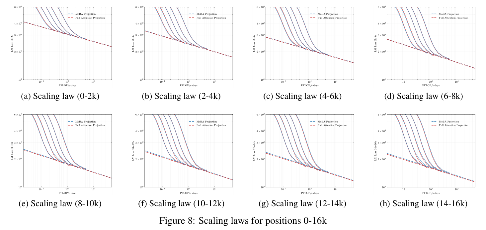
图 8：位置 0–16k 的 scaling laws。（a）0–2k；（b）2–4k；（c）4–6k；（d）6–8k；（e）8–10k；（f）10–12k；（g）12–14k；（h）14–16k。
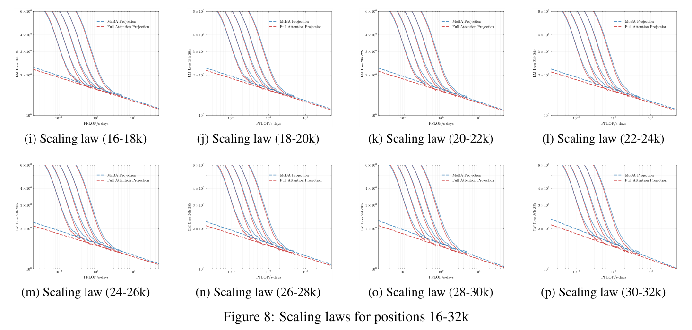
图 8：位置 16–32k 的 scaling laws。（i）16–18k；（j）18–20k；（k）20–22k；（l）22–24k；（m）24–26k；（n）26–28k；（o）28–30k；（p）30–32k。
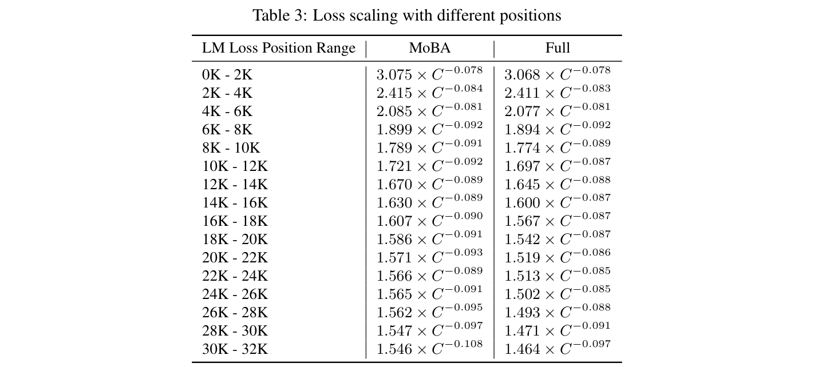
表 3：不同位置的 loss 缩放。